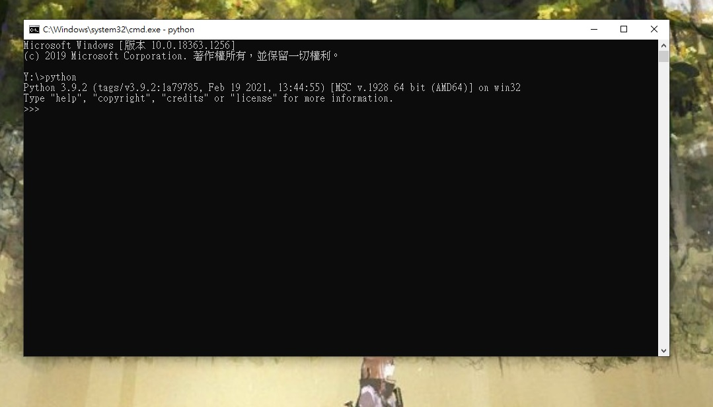
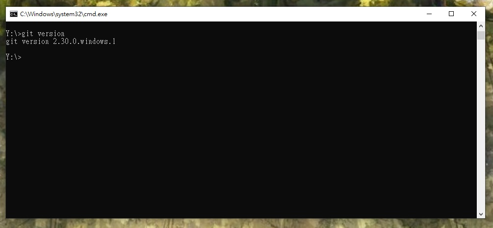
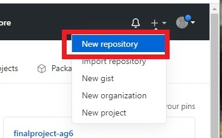
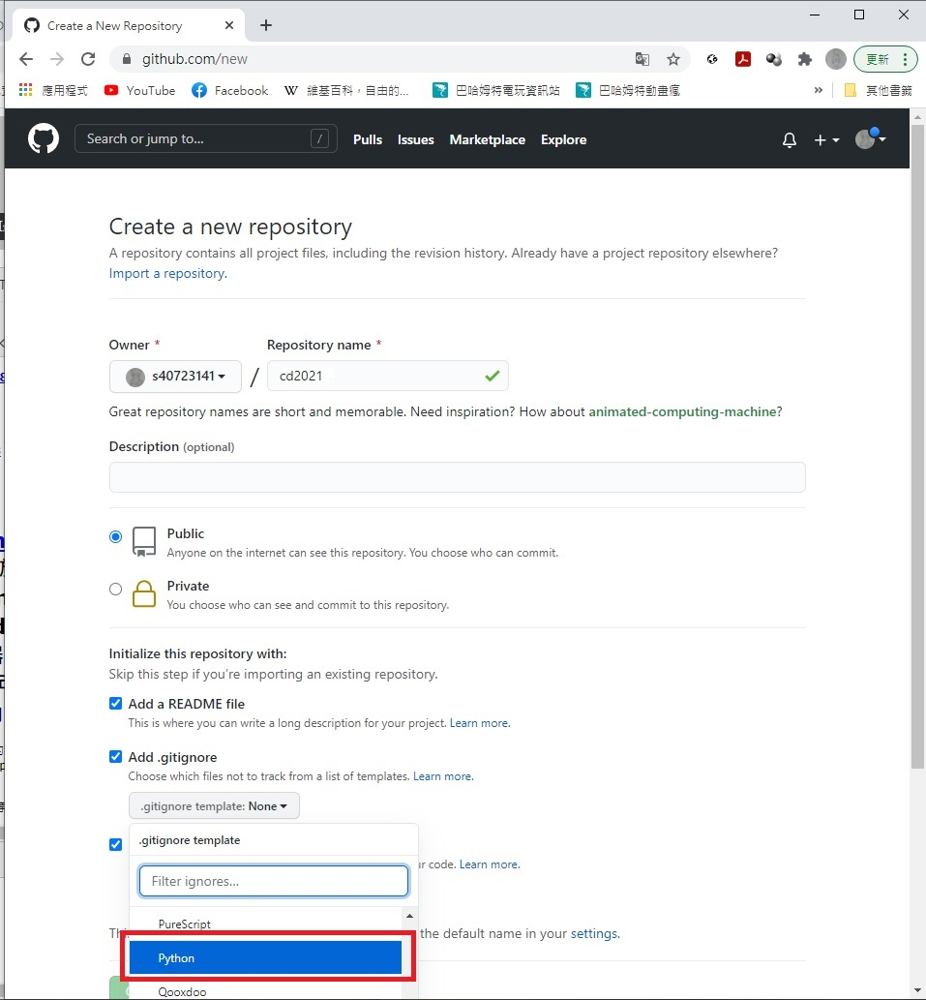
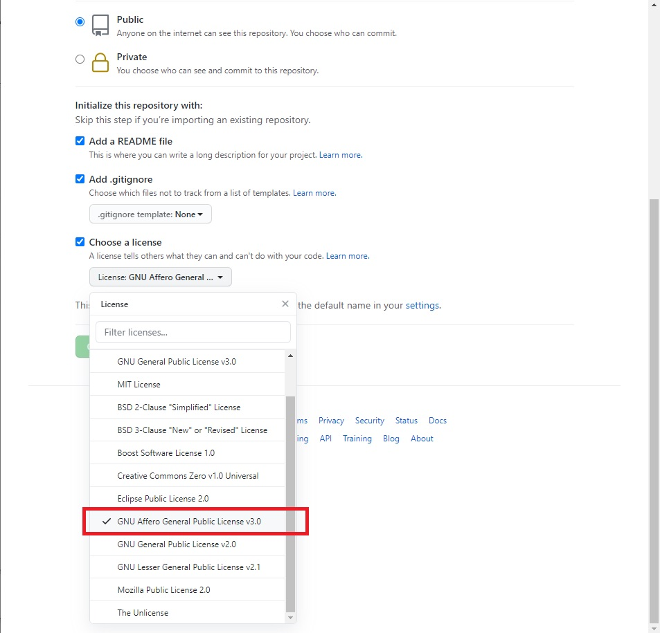
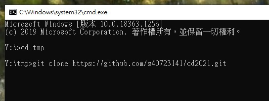
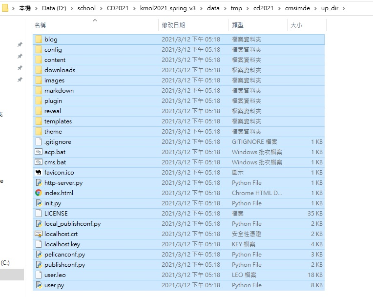

week 1 <<
Previous Next >> Leo
架設網站
至https://github.com/mdecourse/cd2021/discussions/7
下載最新的python 3.9.1版本 可攜系統
開啟start_ipv4.bat
查看版本



在tmp底下新增資料夾命名為git_ref資料夾並在裡面新增git_config.txt的檔案，檔案內容為
git config --global
在home_ipv4資料夾中新增檔案.gitconfig，檔案內容為
登入自己的github，新增cd2021倉儲

將Add a README file、Add .gitignore、Choose a license三個選項全部勾選，
勾選Add .gitignore後選擇python選項，
勾選Choose a license後選擇GNU Affero General Public License v3.0選項。


在黑窗中進入tmp，輸入指令git clone https://github.com/40723141/cd2021.git，clone下自己的倉儲。

輸入指令git submodule add https://github.com/mdecourse/cmsimde.git cmsimde，克隆老師提供的範例倉儲。
進入cmd，cd2021，cmsimde，up_dir，複製所有檔案，
貼到tmp的cd2021資料夾底下。
進入cmsimde底下，依次輸入pip install flask、
pip install flask_cors、
pip install lxml、
pip install bs4、
pip install markdown、
pip install pelican、
pip install leo指令，安裝各個模組，之後輸入python wsgi.py，
打開網頁，login輸入密碼admin，
點選config按鈕更改標題為40723141(自己的學號) cd2021，點save按鈕，
回到黑窗按ctrl+c，輸入指令git add.，git cinfig user.name"47023141"(自己的學號)，
git config user.email "40723141@gm.nfu.edu.tw"(學校信箱)。
git commit -m "此次修改內容的標題"，
git push後輸入github的帳號密碼，到github的倉儲，進入setting，找到github pages，將選項main更改為save。
week 1 <<
Previous Next >> Leo